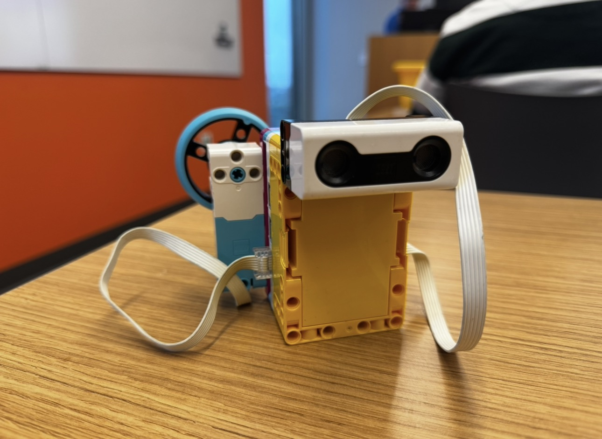
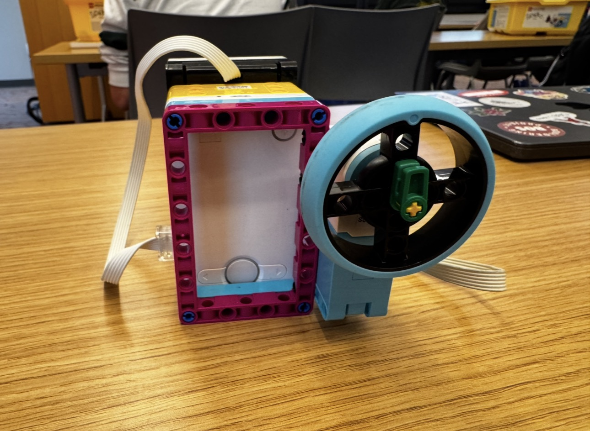

For this project, my partner J and I used AI in a different way than we usually do. We prompted it to help create a scanner that could learn from five objects labeled as either tall or short. Using those examples and an ultrasonic distance sensor, the scanner classified new objects as tall or short based on their measured distance.
We had some errors because the scanner could not reliably detect objects at certain distances. It seemed unable to detect objects when pointing downward beyond about 0.7–0.8 meters. To account for this and reduce bias, we kept the tall-or-short labels subjective: for example, we considered a water bottle or backpack tall, and a pen or ball short.

# Setup: Distance Sensor on port E; Medium Motor on port F.
# Press the LEFT hub button after positioning each object.
from hub import port, button
import runloop
import motor
import distance_sensor
EXAMPLE_COUNT = 5
START_POSITION = 90
LABEL_LIMIT = 40 # Turn at least 40 degrees from 90 to give a label.
PREDICTION_TURN = 90
MOTOR_SPEED = 200
async def main():
##### Collect five examples #####
example_distances = []
example_labels = []
# Put the motor at the starting position before the first example.
await motor.run_to_absolute_position(
port.F, START_POSITION, MOTOR_SPEED
)
while len(example_distances) < EXAMPLE_COUNT:
# Measure your manual turn relative to the 90-degree position.
motor.reset_relative_position(port.F, 0)
print("Example", len(example_distances) + 1)
print("Turn left for tall or right for short.")
print("Place the sensor above the object, then press LEFT.")
# Wait for your button press.
while not button.pressed(button.LEFT):
await runloop.sleep_ms(10)
# Read the distance and how far you turned the motor from 90 degrees.
measured_distance = distance_sensor.distance(port.E)
turn_from_start = motor.relative_position(port.F)
print("Distance:", measured_distance, "mm; turn:", turn_from_start)
# A failed reading does not count toward the five examples.
if measured_distance == -1:
print("No object detected. Try this example again.")
elif turn_from_start <= -LABEL_LIMIT:
example_distances.append(measured_distance)
example_labels.append("tall")
print("Saved: tall")
elif turn_from_start >= LABEL_LIMIT:
example_distances.append(measured_distance)
example_labels.append("short")
print("Saved: short")
else:
print("Turn farther left or right, then try again.")
# Wait until you let go before moving the motor back to 90 degrees.
while button.pressed(button.LEFT):
await runloop.sleep_ms(10)
await motor.run_to_absolute_position(
port.F, START_POSITION, MOTOR_SPEED
)
##### Classify new objects #####
print("Five examples saved. Press LEFT for each new object.")
while True:
# Wait for you to place an object and press the button.
while not button.pressed(button.LEFT):
await runloop.sleep_ms(10)
measured_distance = distance_sensor.distance(port.E)
if measured_distance == -1:
print("No object detected. Try again.")
else:
# Find the saved example with the nearest distance.
closest_index = 0
smallest_difference = abs(
measured_distance - example_distances[0]
)
for index in range(1, EXAMPLE_COUNT):
difference = abs(
measured_distance - example_distances[index]
)
if difference < smallest_difference:
smallest_difference = difference
closest_index = index
# Turn left for tall or right for short.
if example_labels[closest_index] == "tall":
print(measured_distance, "mm: tall")
await motor.run_for_degrees(
port.F, -PREDICTION_TURN, MOTOR_SPEED
)
else:
print(measured_distance, "mm: short")
await motor.run_for_degrees(
port.F, PREDICTION_TURN, MOTOR_SPEED
)
# Leave the answer visible briefly, then return to 90 degrees.
await runloop.sleep_ms(1000)
await motor.run_to_absolute_position(
port.F, START_POSITION, MOTOR_SPEED
)
# Require a new press for the next object.
while button.pressed(button.LEFT):
await runloop.sleep_ms(10)
runloop.run(main())